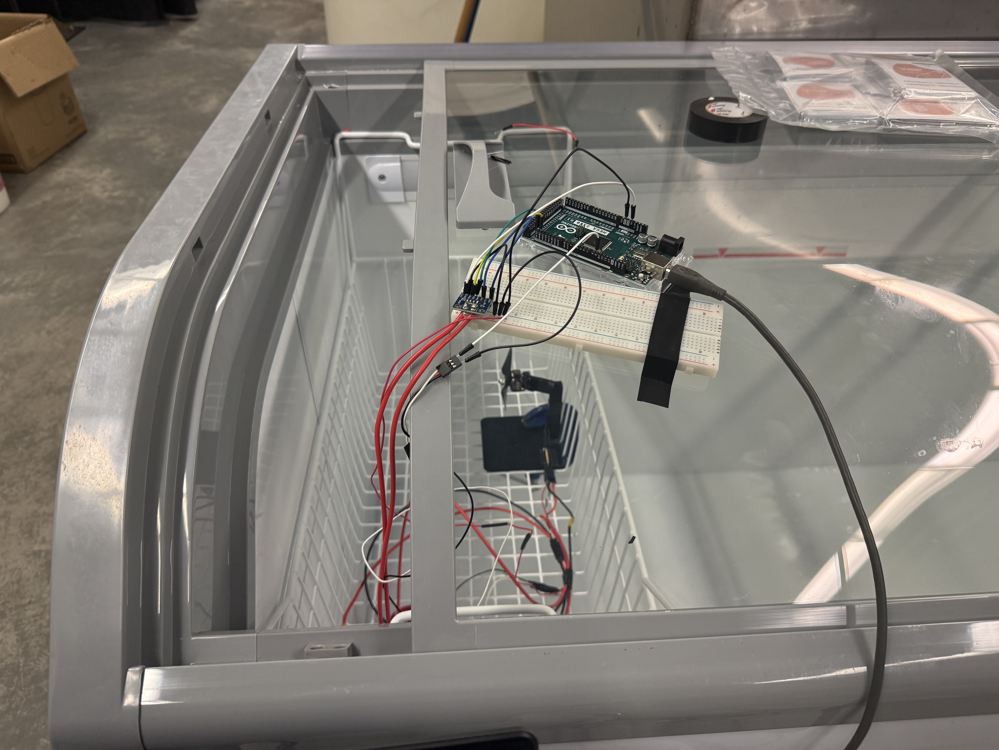
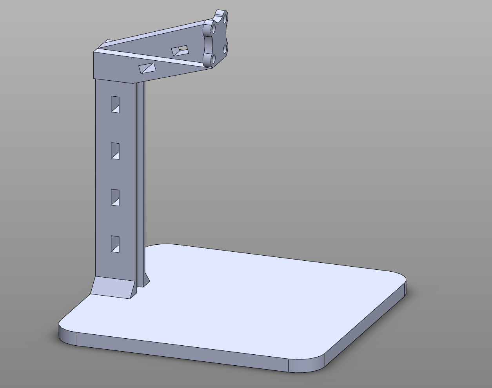
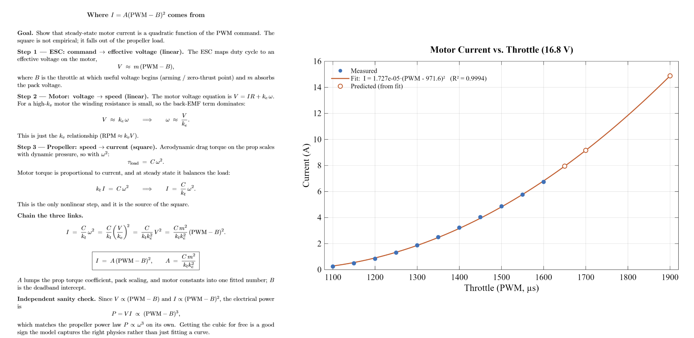

Static thrust test stand with INA226 current sensing and a voltage divider for live power measurement during motor tests.
Gallery

INA226 current sensing setup

Static testing jig CAD

Static thrust testingVoltage divider test (video)
Problem
No way to test or log a motor while it stayed stationary, so no visibility into current draw, voltage sag, or motor/battery endurance
All of this is critical for a fixed-wing/VTOL drone, where the power system has to be trusted before flight
No way to know how much current the motor pulled at a given throttle
This gap already caused a real failure: we pulled too much current during flight and burned through a wire with no warning
No data on how the battery behaves in the cold, which matters for real operating conditions
Proposed Solution
Build a static testing rig that holds the motor fixed so it can be run safely on the ground while logging live electrical data
Use that data to derive the relationship between throttle and current, so wiring could be sized correctly and no more wire would burn
Extend the setup to test battery endurance in cold conditions and evaluate insulation options
Design Process
Rig had to survive real operating loads: motor spins up to 28,800 rpm, produces around 10N of thrust, and the sudden starting torque on spin-up is especially violent
Needed to be clampable anywhere so it could be reused across setups
Designed the jig with relief cuts and gyroid infill for strength, and changed the print orientation to fix a recurring failure where starting torque snapped the print
Soldered and constructed the entire wiring and testing setup from scratch, including the sensing and logging electronics
Derived the current-vs-throttle relationship from first principles using a bench power supply
Ran into issues hitting the power supply's 10A over-current protection; added a 1000uF capacitor and switched to a gradual throttle ramp-up instead, which worked
Landed on the relationship I = A(PWM − B)², which matched the data with an R² of 0.9994 (shown in the static thrust testing image)
Arduino couldn't log voltages above 5V, so added a voltage divider, plus a 47uF capacitor for smooth logging at 5Hz
Ran battery endurance tests in a freezer to simulate cold operating conditions
All static-test logging streamed to Excel using Excel Data Streamer
Final Product
Working static rig that safely runs the motor on the ground and logs current, voltage, and endurance data
Verified current-vs-throttle relationship (R² = 0.9994) that lets wiring be sized correctly, directly addressing the burned-wire failure
Found a key result: battery endurance drops off significantly in the cold, especially with LiHV cells, which has direct implications for cold-weather flight
Next Steps
Get the INA226 working and solder on a 0.002 ohm shunt resistor to log higher currents accurately
Continue testing insulation options to mitigate cold-weather endurance loss